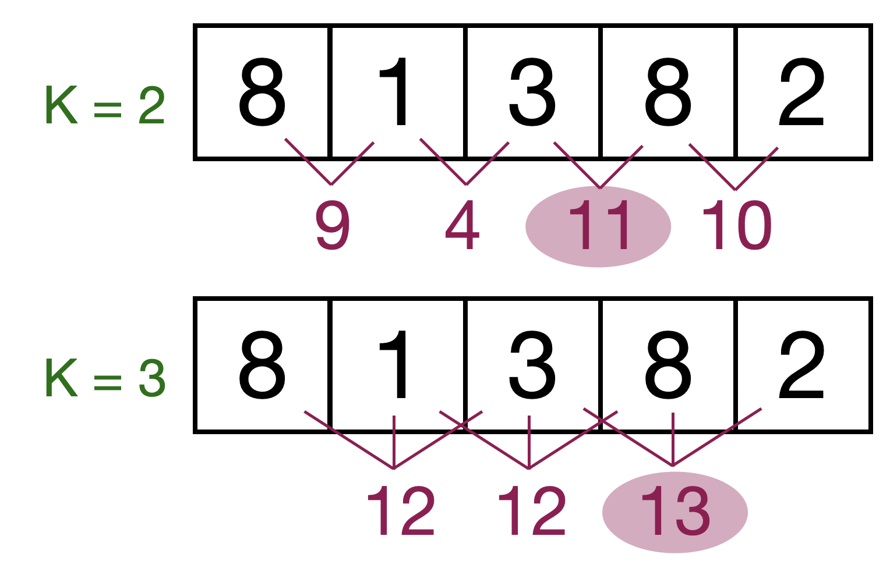

[]Array construction, with size:
int[] testScores = new int[100]; // all elements are initialized to 0
double[] x = new double[9]; // all elements are initialized to 0.0
String[] names = new String[500]; // all elements are null
BankAccount[] customers = new BankAccount[100]; // all elements are nullArray construction, with values:
String[] cars = {"Volvo", "BMW", "Ford", "Mazda"};
int[] numbers = {1, 3, 4, 1, 2, 3};
double[] moreNumbers = { 1, 2.0, 1e-12 };Accessing array elements:
[] to access individual elements in the arrayArray objects have the .length property, which can be used to set up for loops:
Or iterate over each value:
Note that the main function is always defines with an array of String:
public static void main(String[] args) ...
Create a class with a main method that prints all the arguments in args
Given an array of size N and also an integer K, how to calculate the maximum sum of K consecutive elements in the array?
How should we approach this problem?
Get initial sum of array of size K, then for following sub-arrays subtract the previous number (first number outside the window to the left) and add next number (last number inside the window to the right)
Given an array of size N and an integer K, write a Java application to calculate the maximum sum of K consecutive elements in the array.
Test cases:
public static void main(String[] args) {
int[] myNumbers = {10,2,-3,4,3};
System.out.println(maxConsecSum(myNumbers, 1)); // 10
System.out.println(maxConsecSum(myNumbers, 2)); // 12
System.out.println(maxConsecSum(myNumbers, 3)); // 9
System.out.println(maxConsecSum(myNumbers, 4)); // 13
System.out.println(maxConsecSum(myNumbers, 5)); // 16
int[] otherNumbers = {8, 1, 3, 8, 2};
System.out.println(maxConsecSum(otherNumbers, 2)); // 11
System.out.println(maxConsecSum(otherNumbers, 3)); // 13
int[] moreNumbers = {8, 1, 3, 7, 3, 2, 4, 10, -5, 4};
System.out.println(maxConsecSum(moreNumbers, 2)); // 14
System.out.println(maxConsecSum(moreNumbers, 5)); // 26
}public class SlidingWindow {
public static int maxConsecSum(int[] numbers, int k) {
// calculate the sum for the first window
int sum = 0;
for (int i = 0; i < k; i ++) {
sum += numbers[i];
}
// make first window sum max
int maxSum = sum;
// sliding window, start where the first window stopped
// add the current new number, subtract current - k
for (int i = k; i < numbers.length; i++) {
sum += numbers[i] - numbers[i-k];
// check if current sum is greater than what we have
if (maxSum < sum) maxSum = sum;
}
return maxSum;
}
public static void main(String[] args) {
int[] myNumbers = {10,2,-3,4,3};
System.out.println(maxConsecSum(myNumbers, 1)); // 10
System.out.println(maxConsecSum(myNumbers, 2)); // 12
System.out.println(maxConsecSum(myNumbers, 3)); // 9
System.out.println(maxConsecSum(myNumbers, 4)); // 13
System.out.println(maxConsecSum(myNumbers, 5)); // 16
int[] otherNumbers = {8, 1, 3, 8, 2};
System.out.println(maxConsecSum(otherNumbers, 2)); // 11
System.out.println(maxConsecSum(otherNumbers, 3)); // 13
int[] moreNumbers = {8, 1, 3, 7, 3, 2, 4, 10, -5, 4};
System.out.println(maxConsecSum(moreNumbers, 2)); // 14
System.out.println(maxConsecSum(moreNumbers, 5)); // 26
}
}TASK: write Java code to calculate factorial of any integer n – your factorial(n) method should return an array of integers of size n where which element represents the factorial of the index
import java.util.Arrays;
public class ArrayForExample {
public static int[] factorial(int n) {
int result = 1;
int[] allResults = new int[n];
for (int i = 1; i <= n; i++) {
result *= i;
allResults[i-1] = result;
}
return allResults;
}
public static void main(String[] args) {
int[] myResult = factorial(10);
System.out.println(Arrays.toString(myResult));
}
}You have 10 minutes to complete the quiz.
No need to write comments.
Name your method what you want, but the name should be in camelCase.
The size of an array cannot be modified.
ArrayList can grow as you need it. Elements in an ArrayList need to be objects.
import java.util.ArrayList;
ArrayList<Integer> moreNumbers = new ArrayList<Integer>();
moreNumbers.add(1);
moreNumbers.add(1);
moreNumbers.add(1);
System.out.println(moreNumbers);Access an item through its index:
ArrayListRewrite your previous factorial solution to use ArrayList instead
ArrayList – Solutionimport java.util.ArrayList;
public class ArrayListExample {
public static ArrayList<Integer> factorial(int n) {
int result = 1;
ArrayList<Integer> allResults = new ArrayList<Integer>();
for (int i = 1; i <= n; i++) {
result *= i;
allResults.add(result);
}
return allResults;
}
public static void main(String[] args) {
ArrayList<Integer> myResult = factorial(10);
System.out.println(myResult);
}
}We will need to import Random from java.util
We then create an instance of Random
Methods:
ArrayList of random integersWrite a Java application that given an integer n, it creates an ArrayList of size n with random integers from 0 to n-1
ArrayList of random integers – Solution 1Modify this solution so that it gets the integer n from the args array
import java.util.ArrayList;
import java.util.Random;
public class RandomNumbers {
public static ArrayList<Integer> getNumbers(int limit) {
Random rand = new Random();
ArrayList<Integer> randInts = new ArrayList<Integer>();
for (int i = 0; i < limit; i++) randInts.add(rand.nextInt(limit));
return randInts;
}
public static void main(String[] args) {
System.out.println(getNumbers(10));
}
}ArrayList of random integers – Solution 2import java.util.ArrayList;
import java.util.Random;
public class RandomNumbers {
public static ArrayList<Integer> getNumbers(int limit) {
Random rand = new Random();
ArrayList<Integer> randInts = new ArrayList<Integer>();
for (int i = 0; i < limit; i++) randInts.add(rand.nextInt(limit));
return randInts;
}
public static void main(String[] args) {
int n = Integer.valueOf(args[0]);
System.out.println(getNumbers(n));
}
}We can sort an ArrayList using Collections
We then call the method .sort()
Rewrite your previous solution for ArrayList of random integers to create a sorted array
ArrayList of sorted random integers – Solutionimport java.util.ArrayList;
import java.util.Collections;
import java.util.Random;
public class RandomNumbers {
public static ArrayList<Integer> getNumbers(int limit) {
Random rand = new Random();
ArrayList<Integer> randInts = new ArrayList<Integer>();
for (int i = 0; i < limit; i++) randInts.add(rand.nextInt(limit));
Collections.sort(randInts);
return randInts;
}
public static void main(String[] args) {
if (args.length > 0) {
int n = Integer.valueOf(args[0]); // or Integer.parseInt(args[0]);
ArrayList<Integer> myResult = getNumbers(n);
System.out.println(myResult);
}
}
}